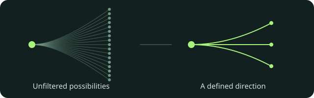
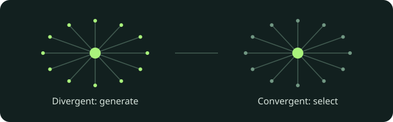
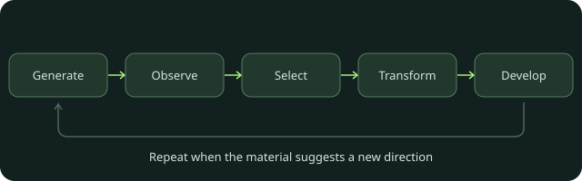

Breaking Creative Block with Generative Tools
How constraints, chance and attentive listening can open new creative directions.
A blank project can be deceptively demanding. Before a single sound has been made, the producer must decide what kind of music to create, which instrument to use, how the piece might move and whether the first idea is worth pursuing. These are different decisions, yet an empty timeline invites all of them at once.
Generative tools offer a way to change the order of those decisions. Instead of requiring an idea before making a sound, they can provide material that invites a response. The useful question is not whether a machine can be creative on our behalf, but how an unexpected result can alter the decisions we make as artists.
01. The paradox of infinite possibilities
Imagine opening a synthesizer with hundreds of presets while trying to write a track. A bass sound might suggest a rhythmic piece, a pad might suggest an ambient composition, and a metallic texture might suggest something entirely different. None is necessarily wrong. The difficulty is that there is no musical context against which to judge them.
Without a criterion for selection, browsing can become a substitute for composing. Every new sound is evaluated against an imagined track that does not yet exist. Adding another instrument or generating another preset may simply extend the search.
A useful intervention is to define a relationship rather than a genre: find something that can answer a short percussion loop, interrupt a sustained drone, or occupy the space between two phrases. Suddenly the question is narrower and a sound can be evaluated by what it contributes.

02. Creation through reaction
Sound is not merely the execution of an idea. It can also be the event that gives rise to an idea. A recording of a closing door, for instance, contains a transient, a resonance and a decaying tail. Depending on which part attracts attention, it might become a drum, a pitched instrument or the beginning of an atmospheric layer.
Try generating or recording a sound before deciding what role it should play. Listen for a feature that suggests an operation. A slow fluctuation might invite a faster counter-rhythm; a brittle attack might suggest a sustained response; a resonant frequency might suggest a tonal centre. The next step is a response to a specific property, rather than an arbitrary addition.
This is particularly useful when working with unfamiliar material. Instead of asking whether the sound belongs in the track you imagined, ask what sort of track would make this sound indispensable.
In The Creative Act: A Way of Being (2023), producer Rick Rubin approaches creativity as a practice of attention and receptivity. Applied to sound design, this suggests a useful change of posture: listen to a sound before assigning it a role. A texture that initially seems unsuitable for a melody might contain a small fluctuation worth isolating. The act of noticing that fluctuation is already a creative decision.
Try listening to a generated texture twice with the screen out of sight. On the first pass, notice where your attention naturally settles. On the second, identify what produced that impression. You may discover a rhythmic detail in a sound you would otherwise have discarded as background noise.
03. Separate generation from judgment
Creative work alternates between expanding possibilities and narrowing them. Divergent thinking describes the production of multiple possibilities; convergent thinking describes the selection or refinement of a solution. They are useful ways of describing different activities, not rigid stages or a guarantee of originality.
In a production session, these activities can interfere with one another. Adjusting a compressor while searching for a motif, for example, may turn a promising sketch into a mixing problem before the musical idea has had time to develop.

Try a bounded experiment: spend five minutes generating six variations of one texture. Record each without adjusting its final mix. Then stop generating and listen to the recordings at comparable loudness. Choose one for a specific reason, such as an unusual attack or an interesting internal movement. Limiting the generation phase prevents the randomize button from becoming another form of preset browsing.
04. Randomness is not creativity
Chance can produce relationships that were not deliberately designed. Yet an unusual result is not automatically useful, and a large number of results does not necessarily improve a piece. What matters is the relationship between a result and the work in which it appears.
Consider an uneven delay pattern. It might sound awkward against a straight drum loop. Rather than reject it immediately, try removing the drums and treating its accents as a rhythmic guide. Alternatively, extract one irregular accent and repeat it as a secondary percussion part. In both cases the accident is the same; its musical function changes through an artistic decision.
Brian Eno and Peter Schmidt's Oblique Strategies, first published in 1975, offer a related precedent: cards containing prompts intended to redirect creative work. The prompt does not compose the music. It changes the question the artist is working on. A generative sound can serve a similar function without needing to supply a finished composition.
The Surrealists explored a related problem long before digital synthesis: how to encounter material that escapes conscious planning. Automatic writing and drawing, free association and collaborative games such as the exquisite corpse offered different ways of interrupting familiar patterns. Max Ernst's frottage technique used the texture of physical surfaces to reveal forms that could be developed into images.
There is a useful analogy in sound design. A recording can be treated as a surface to investigate rather than a finished object. Stretch a short fragment of a recording until its internal grain becomes audible, or isolate a resonance and build an instrument around it. As with frottage, the source supplies details the artist did not have to invent in advance. The parallel is methodological, not a claim that these musical techniques originated with Surrealism.
Another experiment is to combine two sounds chosen independently: a delicate sustained texture and an unrelated mechanical rhythm, for example. Instead of forcing them into an existing arrangement, listen for a relationship between their envelopes, accents or spectral qualities. That relationship may become the organising principle of the piece. The unexpected encounter supplies the material; the composer decides what to retain.
05. Constraints as creative catalysts
A useful constraint does more than remove options: it shifts attention toward a neglected dimension of the work. If the pitch vocabulary is limited, rhythm and articulation become more important. If no new tracks may be added, existing material must be reorganised or transformed.
Constraints are not universally helpful. Research on creativity and innovation describes effects that vary with the nature and severity of the constraint. A restriction that focuses exploration may help, while one that removes the resources necessary for the task may hinder it. Treat a constraint as an experiment, not a moral rule.
| Constraint | What to explore |
|---|---|
| One sample | Extract attacks, sustained fragments and resonances to build contrasting layers. |
| Three pitches | Change phrasing, accents and note lengths instead of adding notes. |
| One synthesizer | Develop a shared timbral identity through modulation and envelopes. |
| No new tracks | Create movement through subtraction, variation and arrangement. |
| No delay or reverb | Suggest distance through filtering, level and transient shaping. |
| An unfamiliar tempo | Reconsider habitual rhythmic subdivisions and the space between events. |
Choose a constraint that addresses the actual problem. If a passage feels crowded, restricting new layers may help. If it feels static, restricting harmonic changes may instead encourage rhythmic or timbral development. Our article Building Melodies Through Repetition and Variation explores how a limited motif can generate an extended musical discourse.
06. Preserve the unexpected
Editing often begins with a sensible impulse: remove noise, correct timing, balance levels. But these operations can also erase the feature that made a recording compelling. A rough resonance might give a texture its identity; an irregular envelope might provide the feeling of movement missing from a perfectly even pattern.
Before repairing an unfamiliar sound, duplicate it. Keep one version unchanged and process the other. Compare both in the actual arrangement, not just in isolation. If the unprocessed version creates a more interesting relationship with the surrounding material, preserve that quality while controlling any genuinely disruptive peaks or noise.
This is not an argument against technical precision. It is a distinction between an unwanted defect and a feature that has not yet found its purpose. Sometimes the most productive edit is to change the surrounding music rather than the sound itself.
07. A practical creative workflow
The following exercise can be completed in a short session, using a synthesizer, a field recording, a sample library or a generative instrument. Its aim is to turn one unfamiliar sound into a small, intentional musical study.

- Generate. Collect six short sounds without trying to build a finished track.
- Observe. Identify one distinctive property in each: an attack, a rhythm, a spectral colour or a spatial quality.
- Select. Choose one sound and state why it interests you. Save the others for another session.
- Transform. Make three versions of the chosen sound, changing only one main parameter in each.
- Develop. Arrange the original and its variations into a short passage. Introduce contrast by removing or repositioning material before adding anything new.
At the end, listen to the passage without looking at the session. Notice whether the transformations form an audible relationship. If they do not, return to selection or transformation instead of generating endlessly.
Forge Seed provides one way to begin this experiment: generate a musical starting point, listen to it, and use the exported audio as material for further work. The Forge Seed guide explains the workflow in more detail. The same method works with any source of unfamiliar sound.
Creative block can have many causes, and no workflow resolves every kind of difficulty. But when the obstacle is an empty project or an excess of options, changing the first task from invention to attentive listening can be a productive way to begin.
References & further reading
Brian Eno and Peter Schmidt, Oblique Strategies (1975).
Divergent Thinking, The Cambridge Handbook of Creativity (2019).
Rick Rubin (2023). The Creative Act: A Way of Being.
André Breton (1924). Manifesto of Surrealism. (MoMA introduction to Surrealism).
Museum of Modern Art. Tapping the Subconscious: Automatism and Dreams.